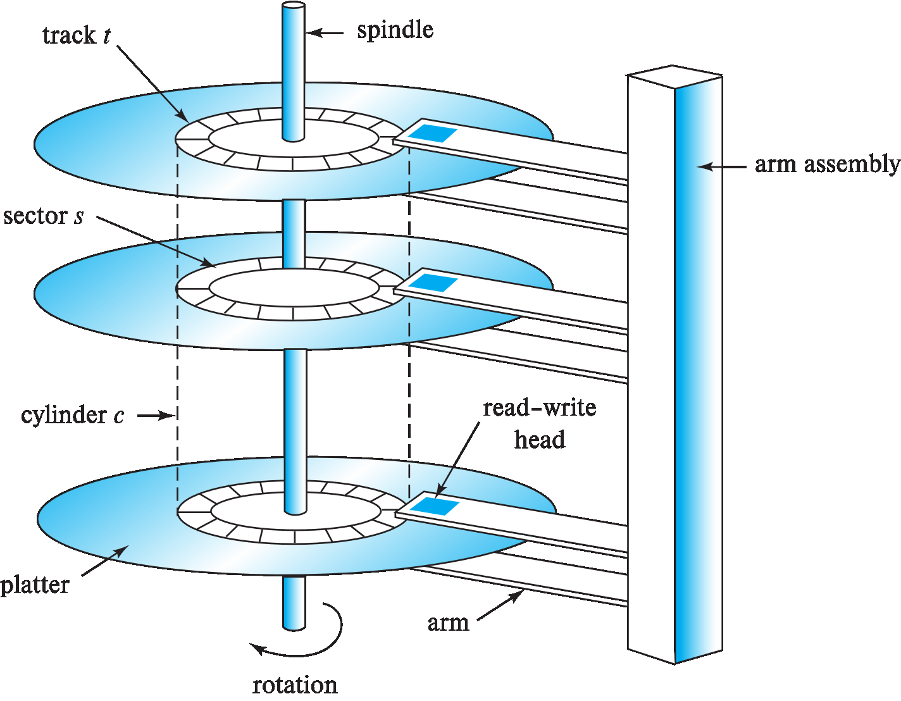

Lecture 8: Physical Storage Systems
这一节其实和数据库关系不太大了（计组.jpg），走个过场即可。
一、物理存储介质分类 (Classification of Physical Storage Media)
1. 基本分类
-
易失性存储 (Volatile storage)：
- 断电后数据丢失
- 例如：主存储器（main memory），高速缓存（cache）
-
非易失性存储 (Non-volatile storage)：
- 断电后数据持久保存
- 包括二级存储（secondary storage）、三级存储（tertiary storage）和电池支持的主存
2. 存储介质选择因素
| 因素 | 说明 |
|---|---|
| 数据访问速度 | 不同介质访问时间差异巨大（ns~ms级） |
| 单位数据成本 | 高速存储成本 > 低速存储成本 |
| 可靠性 | 非易失性存储 > 易失性存储 |
二、存储层次结构 (Storage Hierarchy)
1. 三级存储体系
graph TD
A[一级存储 Primary Storage] --> B[二级存储 Secondary Storage]
B --> C[三级存储 Tertiary Storage]
A --> D[易失性 Volatile]
B --> E[非易失性 Non-volatile]
C --> E
A --> F[访问时间：1-100ns]
B --> G[访问时间：~10ms]
C --> H[访问时间：秒级]
2. 各级存储特性
| 存储级别 | 别名 | 典型介质 | 访问时间 | 易失性 |
|---|---|---|---|---|
| 一级存储 | 主存 | 高速缓存(cache) 主存(main memory) |
1-100ns | 易失 |
| 二级存储 | 在线存储 | 闪存(flash) 磁盘(magnetic disk) |
~10ms | 非易失 |
| 三级存储 | 离线存储 | 磁带(magnetic tape) 光盘(optical disk) |
秒级 | 非易失 |
三、存储接口 (Storage Interfaces)
1. 磁盘接口标准
| 标准 | 速率 | 应用场景 |
|---|---|---|
| SATA | 最高6Gb/s | 普通计算机 |
| SAS | 最高12Gb/s | 服务器 |
| NVMe | 最高24Gb/s | SSD固态硬盘 |
2. 存储架构类型
- 直连存储：
- 磁盘直接连接计算机系统
- SAN(存储局域网)：
- 高速网络连接多服务器与磁盘阵列
- 提供块级存储接口
- NAS(附网存储)：
- 网络存储设备提供文件系统接口
- 使用NFS/SMB等网络文件协议
四、磁盘机制 (Magnetic Disk Mechanism)
1. 磁盘物理结构
sequenceDiagram
participant CPU
participant Controller
participant Disk
CPU->>Controller: 发送LBA逻辑块地址
Controller->>Disk: 转换为CHS(柱面/磁头/扇区)
Disk->>Disk: 1. 磁臂移动至目标柱面
Disk->>Disk: 2. 选择对应磁头
Disk->>Disk: 3. 等待扇区旋转到位
Disk->>Controller: 传输数据
Controller->>CPU: 返回数据/状态

- 盘片(Platter)：存储数据的圆形磁性介质
- 磁道(Track)：盘片表面的同心圆（5万-10万条/盘片）
- 扇区(Sector)：
- 最小读写单元（通常512字节）
- 每磁道500-2000个扇区（外圈>内圈，毕竟外面周长大一些）
- 柱面(Cylinder)：所有盘片相同半径的磁道集合
2. 磁盘控制器功能
- 接收高级读写命令
- 移动磁臂到目标磁道
- 计算并附加校验和(checksum)
- 写后验证机制
- 坏扇区重映射(Remapping)
五、磁盘性能指标 (Performance Measures)
1. 访问时间组成
| 指标 | 说明 | 典型值 |
|---|---|---|
| 寻道时间(Seek time) | 磁臂定位磁道时间 | 4-10ms |
| 旋转延迟(Rotational latency) | 扇区转到磁头下时间 | 4-11ms |
| 数据传输率(Data-transfer rate) | 数据从磁盘读取或写入磁盘的速度 | 25-200MB/s |
\( \text{平均访问时间} = \text{平均寻道时间} + \text{平均旋转延迟} \approx \left(\frac{1}{2} \times \text{最大寻道时间}\right) + \left(\frac{1}{2} \times \text{旋转周期}\right) \)
2. 可靠性指标
我们用MTTF(平均故障时间)表示其可靠性：
- 新磁盘：50万-120万小时
- 举例：1000块MTTF 120万小时的磁盘，平均每1200小时故障1块
- 随使用时间增加而降低
3. 访问模式性能
| 模式 | IOPS（Input/Output Operations Per Second，即每秒输入输出操作次数） | 特点 |
|---|---|---|
| 顺序访问 | 高 | 连续块请求，只需一次寻道 |
| 随机访问 | 较低 | 离散块请求，每次需寻道 |
六、磁盘访问优化 (Optimization Techniques)
1. 硬件级优化
| 技术 | 原理 | 效果 |
|---|---|---|
| 缓冲(Buffering) | 内存缓存常用磁盘块 | 减少物理I/O |
| 预读(Read-ahead) | 提前读取相邻扇区 | 利用局部性原理 |
| 磁盘臂调度 | 电梯算法重排请求顺序 | 减少磁臂移动 |
电梯算法
电梯算法（SCAN算法）详解
1. 基本概念
电梯算法（又称SCAN算法）是磁盘臂调度的一种策略，其工作原理类似于电梯运行方式：
- 单向移动：磁头沿一个方向（如从外向内）持续移动
- 途中服务：处理经过磁道上的所有待处理请求
- 到达端点后反向：移动到最内/最外圈后改变方向
电梯算法通过减少磁头反向次数，将随机I/O转化为近似顺序I/O，通常可降低平均访问时间。
2. 示例解析
比如对于以下原始请求序列（按到达顺序）：
假设初始磁头位置在中部，移动方向为向外：
graph TD
subgraph 磁道位置
A[最外 R1] --> B[中偏外 R3] --> C[中 R5/R4] --> D[中偏内 R2] --> E[最内 R6]
end
subgraph SCAN处理流程
F[当前方向: 向外] --> G1[经过R3: 处理]
G1 --> G2[到达R1: 处理]
G2 --> H[反向: 向内]
H --> I1[经过R5: 处理]
I1 --> I2[经过R4: 处理]
I2 --> I3[经过R2: 处理]
I3 --> J[到达R6: 处理]
end
优化后的处理顺序：
3. 与传统FIFO对比
用FIFO方法在上述例子中经历了中→内(R6)→中(R3)→外(R1)→中(R5)→内(R2)→中(R4)的5次跨越 ，而SCAN只用了中→外→内2次跨越。
4. 算法变种
- LOOK算法：提前反向（未到达物理端点时）
- C-SCAN：单向循环（仅处理一个方向请求）
- F-SCAN：冻结队列（移动期间新请求暂不处理）
2. 文件组织优化
- 连续分配：文件块物理连续存储
- 区段分配(Extents)：以连续块组为单位分配
- 碎片整理(Defragmentation)：
- 解决文件碎片化问题
- 重组分散的文件块
3. 高级优化技术
- 非易失写缓冲区(Non-volatile write buffers)
- 高效查询处理算法
- SSD优化技术（针对闪存特性）
总结（Made By AI）
mindmap
root((物理存储系统))
存储介质分类
易失性存储
非易失性存储
存储层次
一级存储
二级存储
三级存储
磁盘结构
磁道/扇区/柱面
磁盘控制器
性能指标
访问时间
MTTF
IOPS
优化技术
硬件优化
文件组织
碎片整理